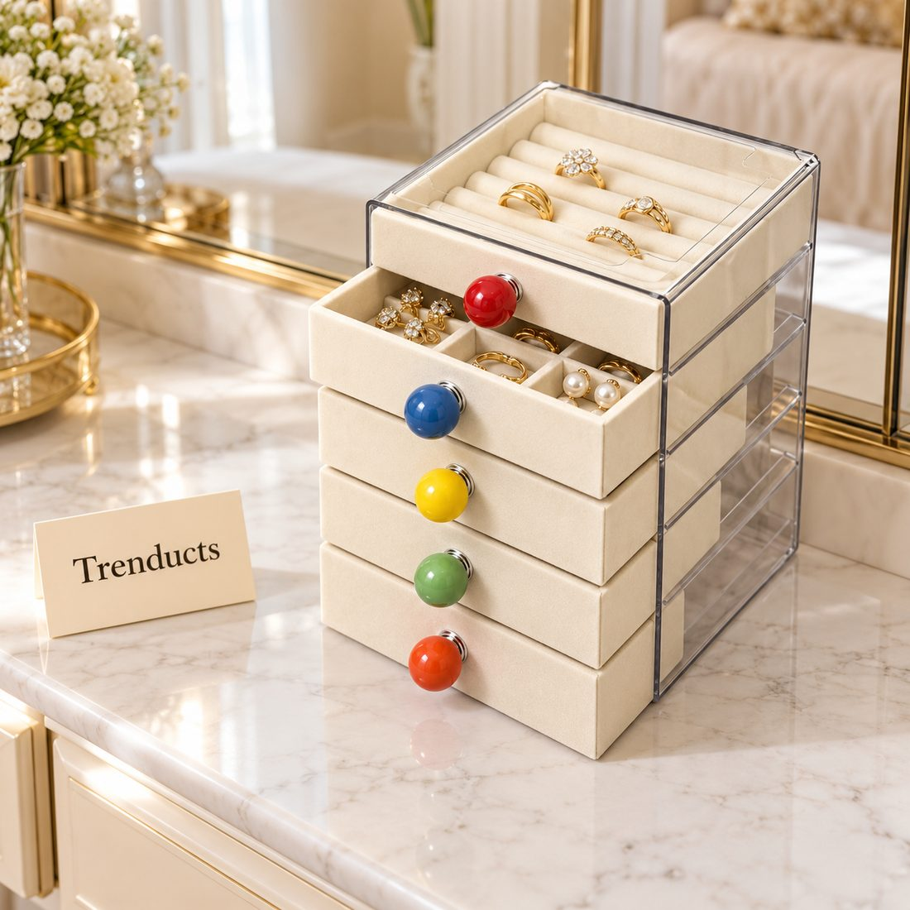
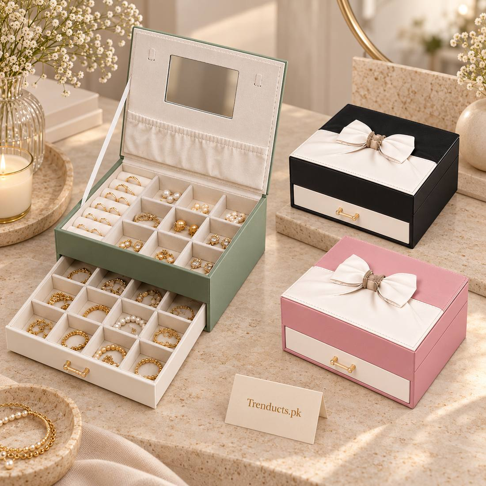

For women in Pakistan, churiyan are more than accessories. Glass bangles in every colour come out for Eid, mehndi and Chand Raat. Metal and gold-plated bangles are worn daily or for family functions. Over the years, many women build a large collection, and storing it well is a real challenge. Glass bangles break easily, metal ones scratch and tarnish, and earrings get separated from their pairs.
With a little planning, your collection can stay neat, safe and easy to choose from.
Sort before you store
Start by taking everything out. Sort into groups: glass bangles, metal and kundan bangles, everyday earrings, formal sets, rings and chains. Within glass bangles, sort by colour, since you usually pick bangles to match an outfit. Set aside anything broken or missing a pair for repair or disposal.
Glass bangles need protection
Glass churiyan break when they knock against each other or fall. Keep them in sets by colour, standing upright or stacked in a padded space. Traditional bangle boxes with rods work well. Alternatively, store each colour set in a soft pouch or wrapped in tissue inside a drawer. Avoid tossing them loosely into a box with heavier jewellery.
Metal and plated bangles
Metal bangles do best away from moisture and air, which causes tarnish. A drawer with velvet lining protects them from scratches. Store gold-plated pieces separately from everyday metal, and keep a small packet of silica gel in the drawer to absorb moisture, especially in humid cities.

Earrings and small pieces
Earrings are the items most likely to go missing. Multi-layer jewellery organisers with small compartments keep pairs together. Rotating organisers make it easy to see everything at once when you are getting ready in a hurry for a wedding. Clear acrylic tops let you see what is inside without opening every drawer.
Formal sets
Bridal and formal jewellery often comes in its own box. Keep these boxes together, labelled, and in a safe place. Wrap each piece in soft cloth inside the box if it does not have its own lining. Avoid storing formal sets in the bathroom, where humidity can dull stones.
A mirror makes the routine easier
Organisers with a built-in mirror let you try on bangles and earrings at the organiser itself. This is especially handy on a busy dressing table or in a shared room.

Daily, occasion and archive
A useful approach is to divide your collection into three levels:
- Daily: the few pieces you wear most days, kept on top in an open tray.
- Occasion: Eid, mehndi and wedding bangles and earrings in organiser drawers by colour.
- Archive: heirloom or rarely used pieces in labelled boxes in a cupboard.
This keeps the organiser on your dressing table uncluttered and makes everyday choices quick.
Caring for jewellery
Put jewellery on after perfume and makeup, and remove it before washing up or bathing. Wipe metal pieces with a soft cloth after wearing to remove sweat. Store pieces only when completely dry.
Chand Raat preparation
Before Eid, take out your bangle collection, check which colours match the outfits planned and set them aside together. Chand Raat shopping is more fun when you know exactly which colours are missing.
Teaching daughters to care for their collection
Young girls often get their first churiyan for Eid and quickly gather a small collection of their own. Giving them a small organiser of their own teaches care early. Show them how to stack glass bangles gently, keep pairs of earrings together and put pieces back after use. It saves many tears over broken favourites and missing earrings on the morning of a family wedding, and it often becomes a little ritual they enjoy.
Where to find organisers
For multi-layer, rotating and mirrored organisers, browse the jewellery organizers at Trenducts.pk, delivered across Pakistan.
A collection you can enjoy
A good storage system protects pieces that often carry memories as well as value, and it means the right bangles are always ready for the next celebration.